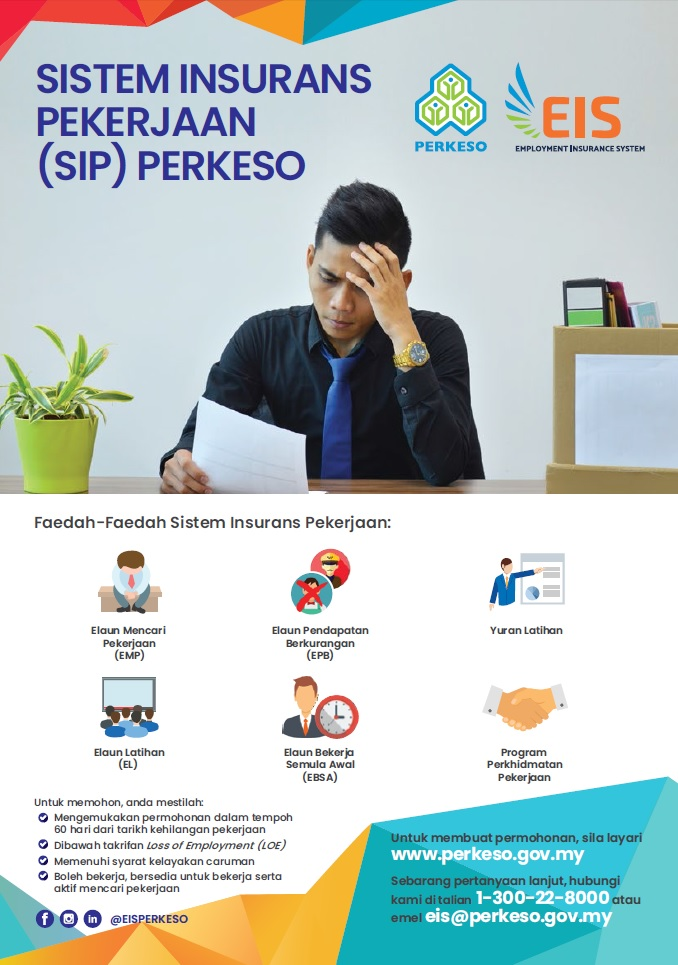

| HOMEPAGE | OUR SERVICE | REGISTRATION |
|  | EMPLOYEE WORKER The Employment Insurance System (EIS) was established on 1st January 2018 to provide income replacement for Insured Persons (IP) who have lost their jobs. IPs who apply to PERKESO will receive re-employment assistance from Employment Services Officers (ESO). As part of their job search efforts, IPs are required to enroll with MyFutureJobs, where they will be matched to suitable vacancies. Eligible IPs can also choose to attend skills training during the unemployment period or after they are re-employed as part of the EIS active labour market program. |
|---|